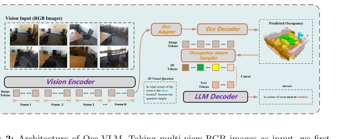
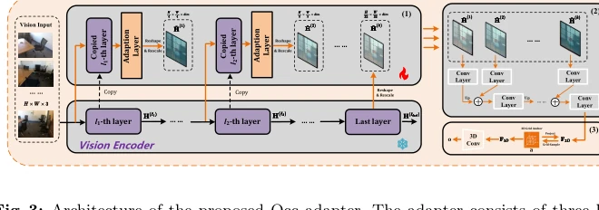
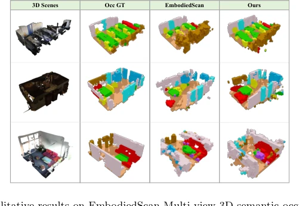

Occ-VLM 试图用单目 RGB 和单一 2D 编码器搞定 3D 理解，这操作有点像用平底锅煎牛排——理论上可行，但火候难控。它把 Occupancy 当作几何先验，强行把 2D 特征‘提’到 3D 空间，确实省去了笨重的 3D 编码器，但依赖多视角 posed 图像这点，在单目场景下就有点捉襟见肘。虽然声称在 Occupancy 预测上 SOTA，但和专用 3D 网络比，这算是‘挤牙膏’式的提升。不过，能在不依赖点云的情况下和 3D 输入模型掰手腕，确实给具身智能省了传感器成本，算是个不错的‘穷办法’。它声称实现了 3D 几何感知与语言推理的统一，但本质上还是靠 Occupancy 做中间件。这种‘曲线救国’的方式虽然巧妙，但也引入了新的误差传播风险——如果 Occupancy 预测不准，LLM 的 3D 推理就会变成‘空中楼阁’。好在实验数据证明，这种误差在可控范围内，至少比那些需要深度传感器的方案更灵活。
Occ-VLM attempts to achieve 3D understanding using monocular RGB and a single 2D encoder, this operation is somewhat like frying a steak in a frying pan—theoretically feasible, but heat control is difficult. It treats Occupancy as a geometric prior, forcibly lifting 2D features into 3D space, it indeed saves the cumbersome 3D encoder, but relying on multi-view posed images is a bit of a stretch in monocular scenarios. Although claiming SOTA in Occupancy prediction, compared to dedicated 3D networks, this counts as a 'squeezing toothpaste'-like improvement. However, being able to wrestle with 3D input models without relying on point clouds indeed saves sensor costs for embodied AI, counting as a good 'poor man's method'. It claims to achieve the unification of 3D geometric perception and language reasoning, but essentially still relies on Occupancy as middleware. This 'roundabout way' method is clever, but also introduces new error propagation risks—if Occupancy prediction is inaccurate, LLM's 3D reasoning will become a 'castle in the air'. Fortunately, experimental data proves this error is within controllable range, at least more flexible than those schemes requiring depth sensors.
研究动机Motivation
现有 3D VLM 要么依赖点云 [15, 38, 54] 或 RGB-D [39, 58]，限制了部署场景；要么用双编码器架构 [51, 57]，导致几何与语义解耦且计算冗余。研究者想问：能否只用 RGB 和单 2D 编码器实现统一 3D 理解？现有方法在纯 RGB 输入下，要么几何感知弱，要么架构复杂。Occ-VLM 旨在解决这种结构上的割裂，试图通过 Occupancy 作为桥梁，让 2D 语义直接赋能 3D 空间推理，避免显式 3D 输入的依赖。特别是对于具身智能，获取高质量点云或深度图往往成本高昂。现有双编码器方法虽然能处理 RGB，但需要额外的几何编码器（如 VGGT），增加了推理延迟。这种设计在结构上割裂了 3D 几何感知与 2D 语义，阻碍了统一表示的学习。因此，如何在不牺牲几何精度的前提下，简化架构并降低对硬件的依赖，成为该领域的关键痛点。
Existing 3D VLMs either rely on point clouds [15, 38, 54] or RGB-D [39, 58], limiting deployment scenarios; or use dual encoder architectures [51, 57], leading to decoupling of geometry and semantics and computational redundancy. Researchers want to ask: Can unified 3D understanding be achieved using only RGB and a single 2D encoder? Existing methods under pure RGB input either have weak geometric perception or complex architecture. Occ-VLM aims to solve this structural fragmentation, attempting to use Occupancy as a bridge, allowing 2D semantics to directly empower 3D spatial reasoning, avoiding dependency on explicit 3D input. Especially for embodied AI, obtaining high-quality point clouds or depth maps is often costly. Existing dual encoder methods can handle RGB, but require additional geometric encoders (e.g., VGGT), increasing inference latency. This design structurally decouples 3D geometric perception and 2D semantics, hindering the learning of unified representations. Therefore, how to simplify architecture and reduce hardware dependency without sacrificing geometric accuracy has become a key pain point in this field.
The overall process is divided into two stages: first train Occ Adapter to predict Occupancy, then joint instruction fine-tuning. The core is Occ Adapter, it freezes the 2D encoder, inserts lightweight Transformer adapters in intermediate layers, extracts multi-scale features and upsamples/fuses. Then use a 3D convolutional decoder to predict voxel semantic Occupancy. The key innovation lies in Occupancy-aware Token Representation: using the predicted Occupancy grid as a mask, back-project sampling foreground 2D features, and injecting 3D Position Encoding (PE). Thus, the LLM receives not only semantic tokens but also spatial anchors. Finally, flatten multi-view token sequences input to LLM, utilizing its video understanding capability to implicitly handle cross-view interactions. Training adopts a two-stage strategy: Stage 1 offline train Occ Adapter, use Scene-Class Affinity Loss to constrain geometry and semantics; Stage 2 conduct visual instruction fine-tuning, jointly optimize LLM generation. This decoupled training preserves the 2D encoder's pre-training ability while endowing the model with 3D perception.
Evaluated Occupancy on EmbodiedScan, VQA on ScanQA/SQA3D, Captioning on Scan2Cap. Metrics include mIoU, EM@1, BLEU, etc. In results, Occ-VLM surpasses all RGB baselines in Occupancy prediction, mIoU reaches 18.41%. On VQA tasks, EM@1 29.6%, better than Spatial-MLLM, and close to 3D input models like LLaVA-3D. Ablation experiments show 3D PE is crucial for performance, removal causes Captioning to drop significantly. Increasing input view count can improve geometric reconstruction and reasoning ability, but token count also increases. Specifically, on ScanQA validation set, it defeats pure 2D input models like Spatial-MLLM, and even approaches point-cloud dependent 3D-LLM on some metrics. In Scan2Cap task, its ROUGE score gap with Video-3D-LLM is extremely small. Additionally, view count analysis indicates more views can significantly improve Occupancy prediction recall, thereby reducing background noise and improving LLM reasoning accuracy. This proves geometric prior has substantial help for language model's spatial understanding.

Fig. 4: Qualitative results on EmbodiedScan Multi-view 3D semantic occupancy pre- diction benchmark.

Fig. 5: Qualitative results of Occ-VLM on the ScanQA validation set, showing 3D occupancy prediction and 3D VQA outputs across four scenes.

Fig. 6: Additional results on the number of input views. More input views lead to higher occupancy prediction accuracy and consistent improvements on 3D VQA and 3D dense captioning.